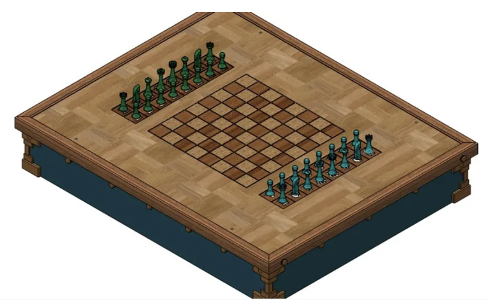
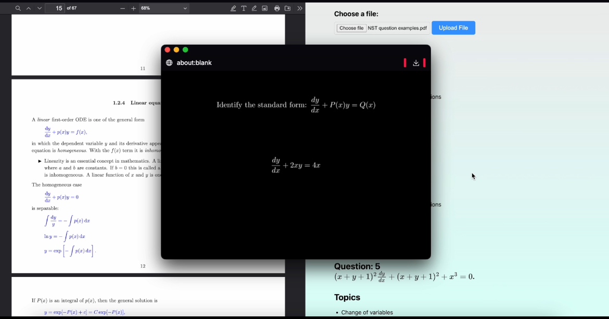
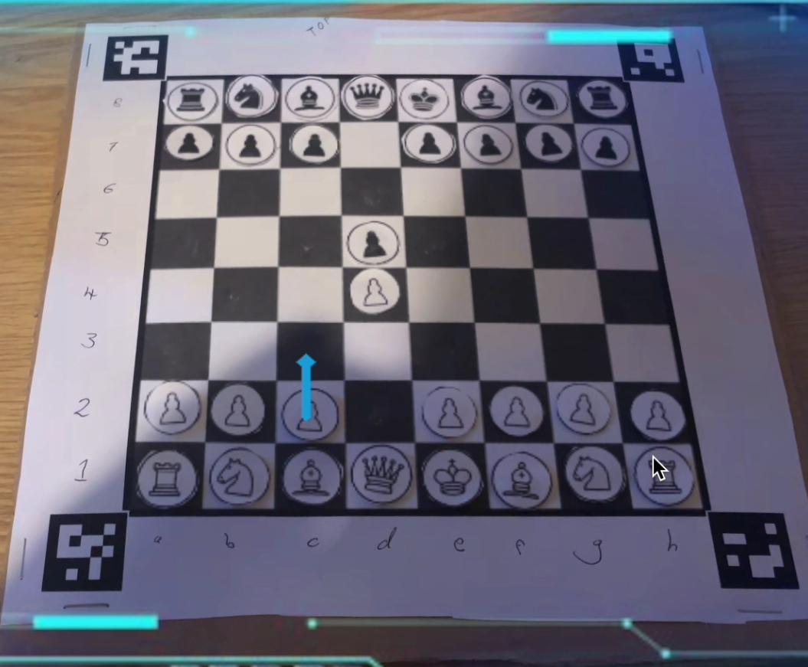
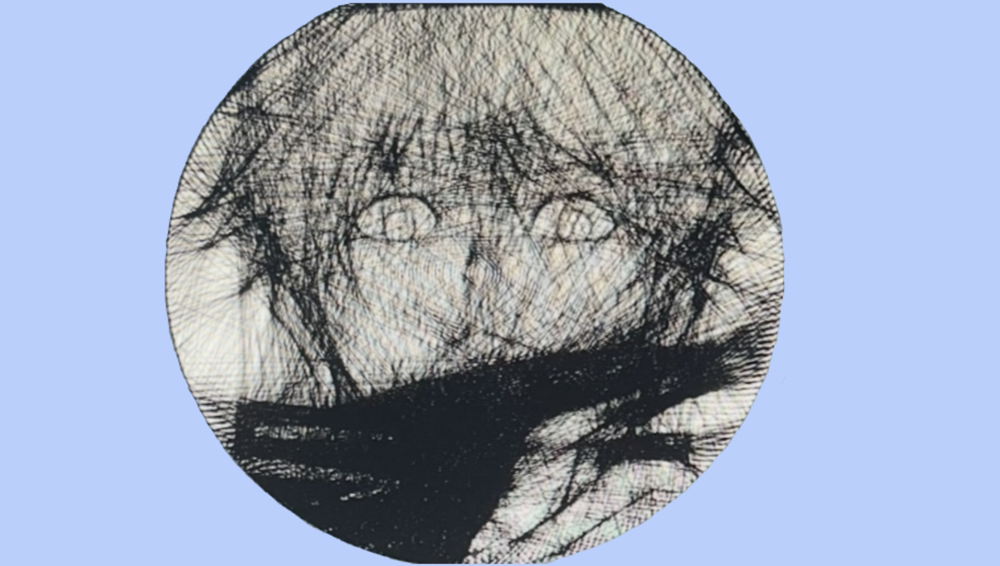

Automate
A robot designed to help people with motor disabilities play over the board chess
Topogmesh

A data visualisation tool which uses satelite and OpenStreetMap data to create 3D printable models of cities and terrain
Autocamcribs
An AI study assistant which procedurally animates mathmatical explanation videos tailered to the users homework questions
Charvis
An AR pair of glasses which uses computer vision and machine learning to draw arrows showing the best move in a game of chess
String Art
An algorithm for converting images into a single thread wound around a circular peg board